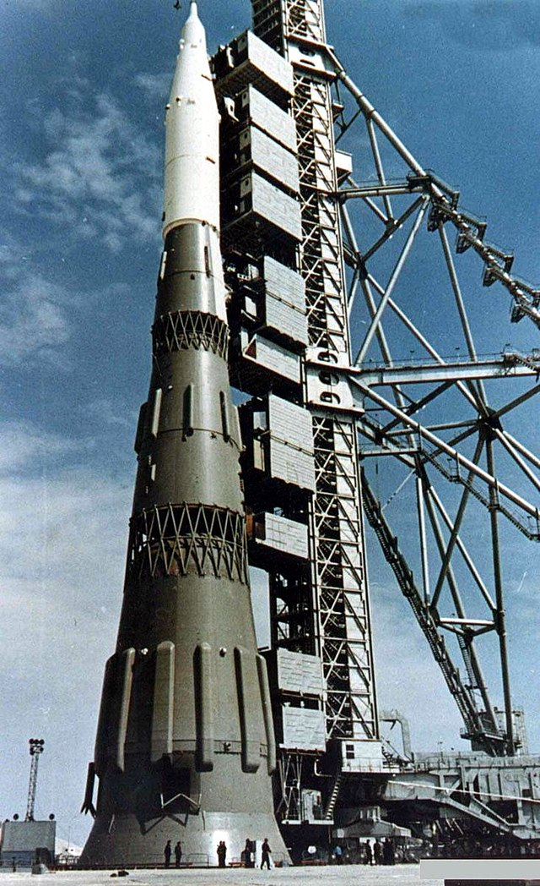

N1 is the only concept on this site which actually flew, four times in fact! It was designed in the USSR to be a competitor to the USA's Saturn V, which landed people on the moon. However, the worse manufacturing abilites and the less regard for safety in the USSR meant that the N1 had a much different development, and a much more reckless and dangerous one too. Because of the lack of large machinery needed to make large cylindrical fuel tanks in the USSR, the fuel tanks had to be balls, the different sizes of which lead to the N1's conical shape. The USSR also was less able to create as large engines as the USA, so the N1 had many, many small ones instead (30 on the first stage alone!). Due to the large influence of the military on Soviet decision making, the N1 only got approved because Sergei Korolev (the N1's lead designer) said that it would be able to carry nuclear weapons into orbit. However, the Soviet government didn't give the project the funding it required, mostly because their budget was mostly allocated to the military, and so the N1 was unable to be adequately tested meaning that several problems went unnoticed. This meant that all four of its flights resulted in failures, and in the second flight, the rocket crashed back into the launchpad and created the largest recorded non-nuclear explosion up to that point. The N1 program was ended after Sergei Korolev's death after a surgery went wrong, and the USA reached the moon uncontestedly.
